Uči na bilo kom jeziku.
Razumi na svom.
Nota pretvara prezentacije i beleške sa časova u objašnjenja, testove i kartice, priprema te za kontrolne i pomaže da učiš srpski, engleski i španski. AI radi na tvojoj Claude pretplati.
12,7 MB · Windows 10 i 11 · bez administratorskih prava
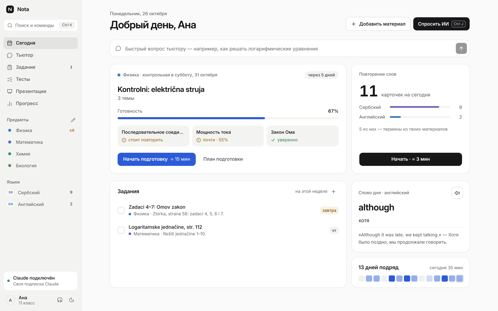
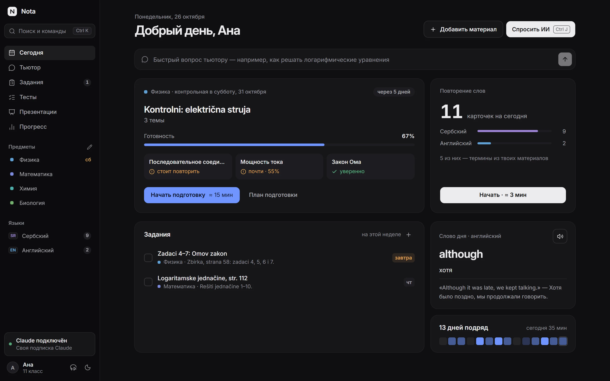
- Tvoja Claude pretplataNota pokreće zvanični Claude Code, a prijava ide kroz Anthropic prozor. Nota ne vidi lozinku ni tokene.
- Sve ostaje kod tebeMaterijali, razgovori i kartice čuvaju se na računaru. Nalog u Noti nije potreban.
- Škola i fakultetZa srednju školu i studente: predmeti na jeziku nastave, objašnjenja na maternjem.
Materijali
Prezentacija sa časa jasna je od prvog slajda
Dodaj PDF, PowerPoint, Word ili fotografiju table. Nota pravi beleške na maternjem jeziku i rečnik termina, a termine podvlači na samom slajdu: pređi mišem i videćeš prevod i objašnjenje.
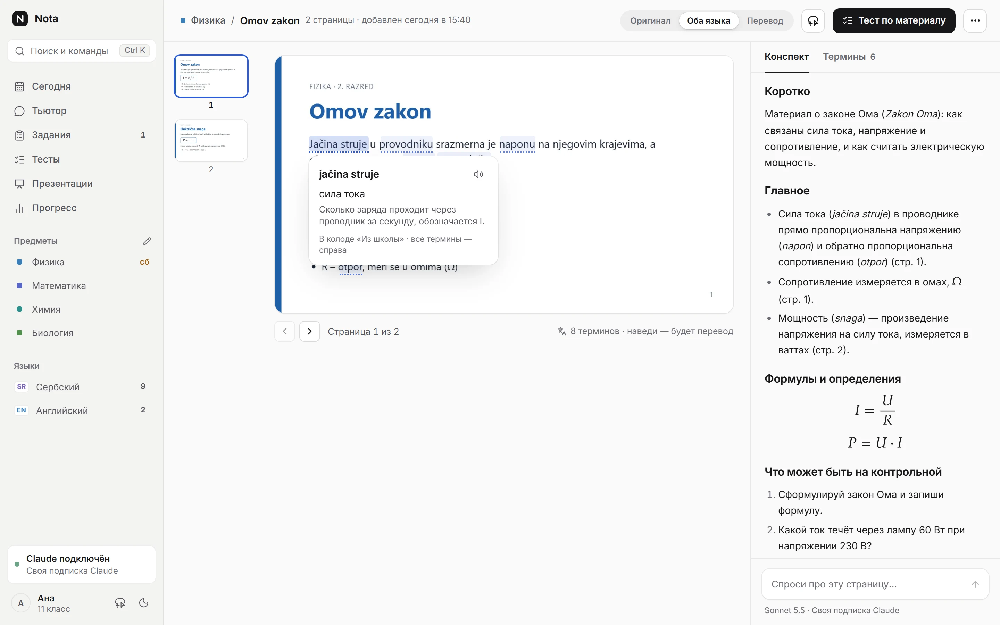
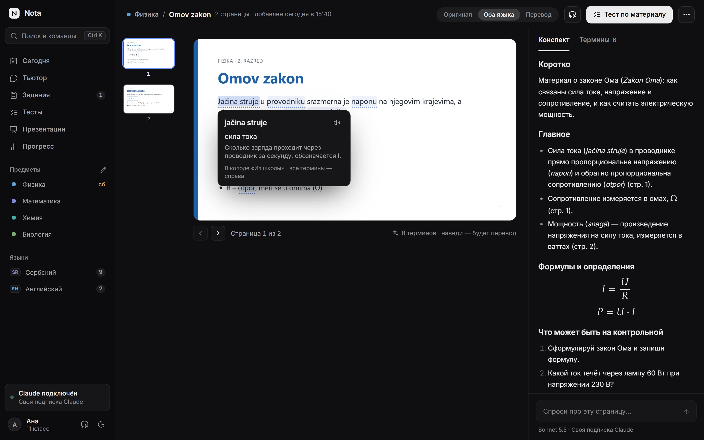
- Beleške: glavno, formule i šta može da bude na kontrolnom
- Prevod bilo koje strane pored originala
- Termini jednim klikom idu u kartice „Iz škole”
- Pitanje tutoru o otvorenoj strani
Tutor
Objašnjava, a ne rešava umesto tebe
Tutor poznaje tvoje materijale i piše istim oznakama kao nastavnik. Formule, grafike, crteže, tabele i hemijske jednačine crta u samom odgovoru, a rešenje otkriva korak po korak — da prvo možeš da pokušaš bez pomoći.
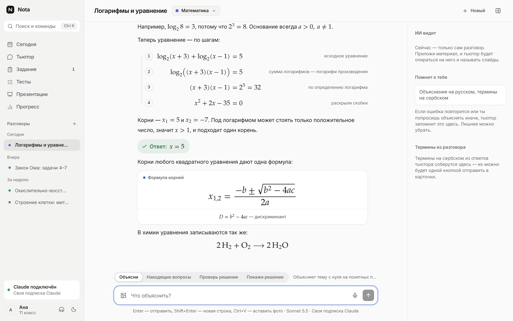
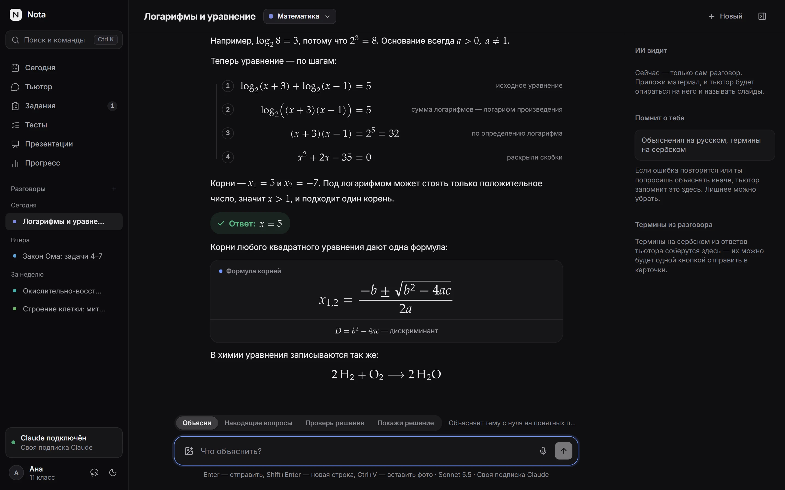
- Četiri režima: objasni temu, pitanja koja vode, proveri rešenje sa fotografije, pokaži rešenje
- Bilo koji deo odgovora ide u beleške jednim dugmetom
- Pamti šta ti je teško i pokazuje šta vidi iz tvojih materijala
- Glasovni unos: govor se prepoznaje na samom računaru
Zaokruži i pitaj
Formula nije jasna? Zaokruži je
Pritisni Ctrl+Shift+X u bilo kom programu i zaokruži formulu, zadatak ili grafik. Otvoriće se pitanje tutoru sa zaokruženim delom — ostaje da napišeš šta nije jasno.
Kontrolni
Za kontrolni po planu, a ne poslednje noći
Unesi datum i materijale. Nota izdvaja teme, proverava šta već znaš i raspoređuje pripremu po danima. Dan ranije — probni kontrolni sa tajmerom, kao pravi.
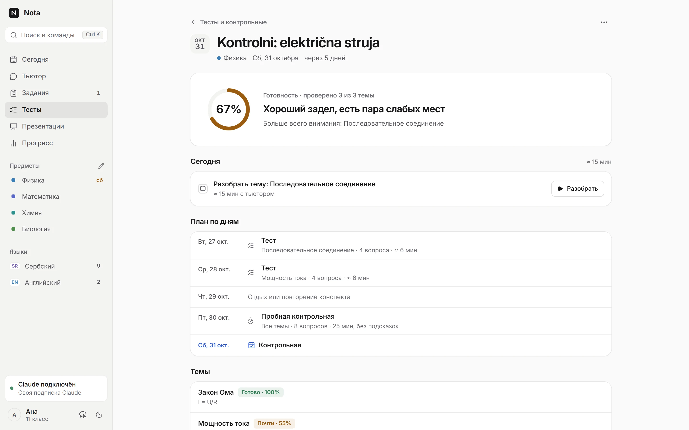
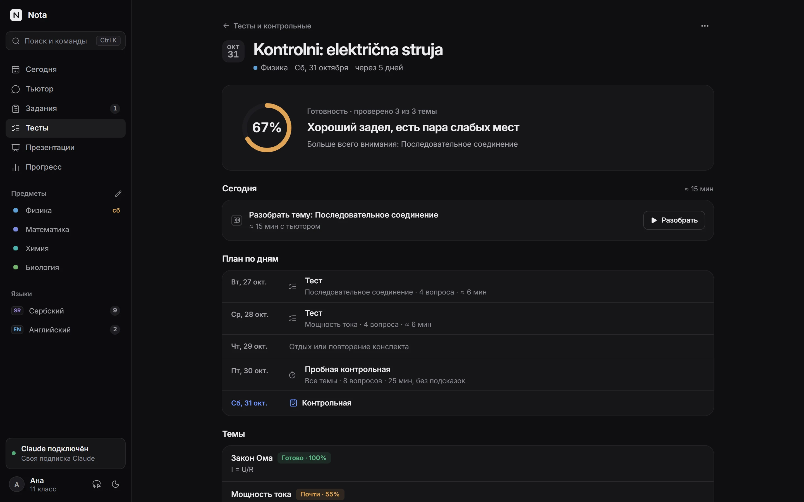
- Spremnost za svaku temu — po tvojim odgovorima, a ne odokativno
- Sedam vrsta pitanja: od izbora odgovora do zadatka sa formulom i opisnog odgovora
- Analiza grešaka sa tutorom jednim klikom
- Mapa znanja predmeta: šta je jasno, a šta treba osvežiti
Jezici
Srpski, engleski i španski — do C1
Test nivoa, pa put od 38 lekcija: reči, pravilo, vežbe, slušanje i scenica. Između lekcija — kartice, razgovori i pisanje sa ispravkama.
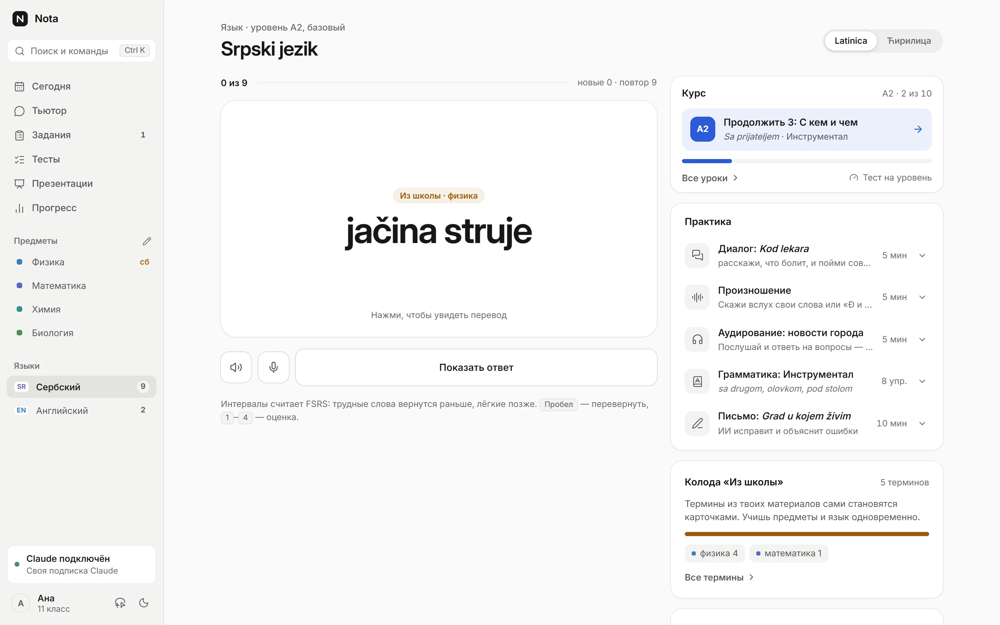
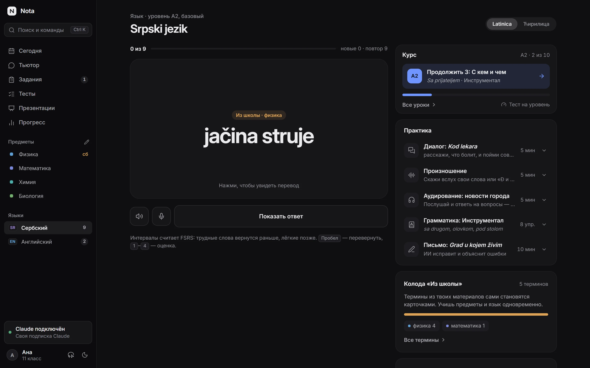
Kartice sa slikama
Ponavljanje u razmacima (FSRS). Konkretne reči dobijaju fotografiju iz slobodnih baza.
Špil „Iz škole”
Termini iz tvojih prezentacija sami postaju kartice sa primerom sa slajda.
Razgovori i pisanje
Scenice u pekari, kod lekara, u školi. AI ispravlja tekst i objašnjava greške.
Izgovor
Izgovori reč naglas i Nota označi šta nije jasno. Govor se prepoznaje na računaru.
Za srpski: latinica i ćirilica svuda, tabele padeža i lažni prijatelji.
Na radnoj površini
Reči se uče usput
Vidžet na svakih nekoliko minuta pokaže novu reč: klik — prevod i primer, a „Znam” ili „Ponovi” odmah ulaze u raspored ponavljanja. Ctrl+Shift+Space otvara brzo pitanje tutoru iz bilo kog programa.
- Vidžet u tri veličine
- Windows obaveštenja sa rečju i dugmadima
- Ikona u traci i pokretanje sa sistemom — po želji
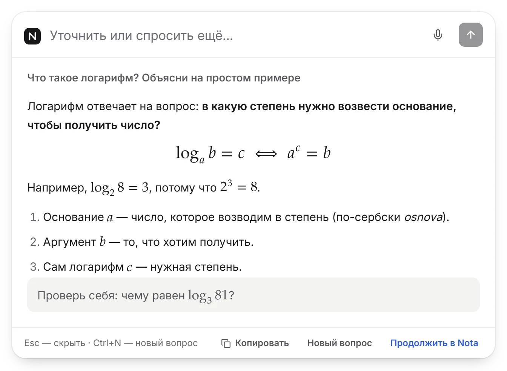
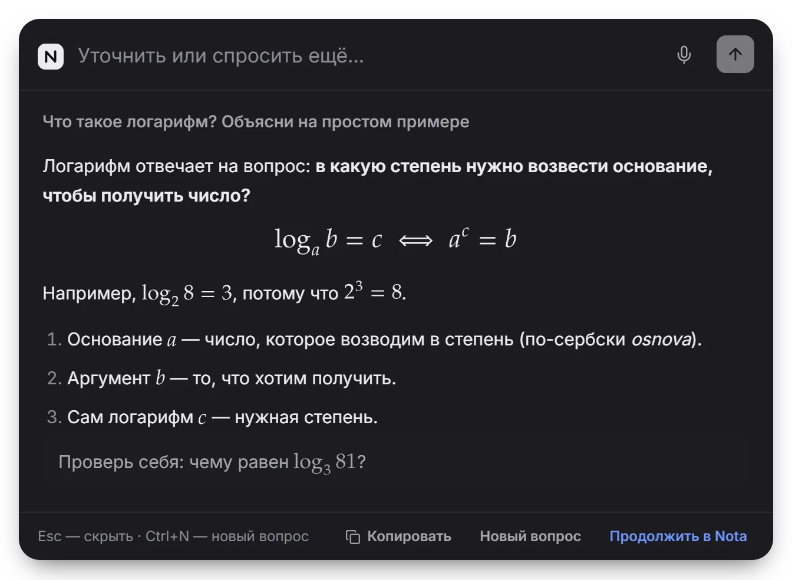
Prezentacije
Referat od plana do probe
Claude predlaže plan, zatim pravi slajdove i tekst izlaganja. Uređuj na samom slajdu, vežbaj sa tajmerom i snimkom glasa, a posle probe dobij analizu: gde se oteže i koje poštapalice koristiš.
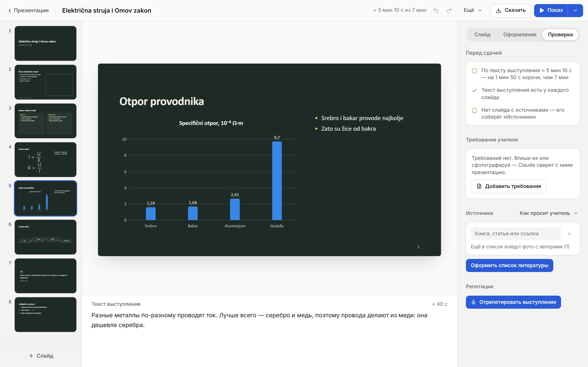
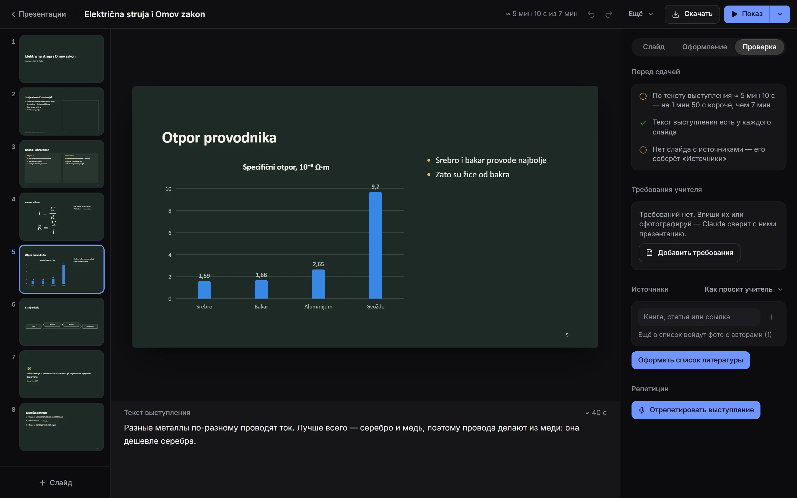
- Teme, grafici, formule i fotografije sa imenom autora
- Slajdovi na projektoru, a na laptopu beleške i tajmer
- PPTX sa pravim tekstualnim poljima i PDF
- Provera po zahtevima nastavnika i spisak literature po APA, MLA ili GOST
Povezivanje
Radi na tvojoj Claude pretplati
Nota ne prodaje pristup AI-ju i ne šalje zahteve preko svog servera. Ona pokreće zvanični Claude Code na tvom računaru, a prijava ide kroz Anthropic prozor, sa tvojom pretplatom.
- 1
Instaliraj Notu
Mali instalater bez administratorskih prava. Ažuriranja stižu sama.
- 2
Poveži Claude
Nota pronalazi Claude Code ili ga instalira zvaničnim Anthropic instalaterom. Odgovara Pro ili Max pretplata.
- 3
Uči
Reci Noti šta učiš i na kom jeziku, i dodaj prvu prezentaciju.
Nemaš pretplatu? Odgovara i tvoj Anthropic API ključ. Čuva se u zaštićenom skladištu Windowsa.
Zahtevi idu preko tvog Claude plana. Nota ne vidi lozinku ni tokene za prijavu.
Privatnost
Tvoje učenje ostaje tvoje
Baza na računaru
Materijali, razgovori, kartice i napredak čuvaju se lokalno. Reči možeš da ponavljaš i bez interneta.
Glas ne ide u oblak
Govor prepoznaje whisper.cpp na samom računaru — kod tutora, na probi i u izgovoru.
Bez registracije
Nalog u Noti nije potreban. Dovoljna je Claude pretplata ili tvoj ključ.
Pitanja
Ukratko
Koliko košta Nota?
Nota je trenutno besplatna. AI se plaća posebno — Claude Pro ili Max pretplatom ili tvojim Anthropic API ključem.
Na kojim računarima radi?
Na Windowsu 10 i 11. Verzija za Mac, pregledač i telefon za sada nema.
Zašto me Windows upozorava kod instalatera?
Instalater još nije potpisan sertifikatom, pa SmartScreen može da napiše „Windows je zaštitio vaš računar”. Klikni „Više informacija”, pa „Ipak pokreni”. Ažuriranja Note su potpisana i Nota proverava potpis pre instalacije.
Na kom jeziku je aplikacija?
Interfejs je za sada na ruskom; srpski i engleski su u planu. Tutor objašnjava na maternjem jeziku koji izabereš: srpskom, engleskom, španskom, nemačkom, francuskom, italijanskom, ruskom, ukrajinskom ili beloruskom.
Da li je ovo aplikacija kompanije Anthropic?
Nije. Nota je nezavisan projekat. Radi na Claude Code-u, zvaničnom alatu kompanije Anthropic, ali nije povezana sa njom.
Šta ide preko interneta?
Tvoja pitanja i materijali koji su za njih potrebni idu u Claude, preko tvog Claude Code-a ili ključa. Pretraga slika za reči koristi Wikimedia Commons i Openverse, a Nota proverava ažuriranja na GitHubu. Ništa više.
Kako se ažurira?
Nota sama pronalazi novu verziju i preuzima je u pozadini. Ostaje samo da je ponovo pokreneš — materijali, razgovori i kartice ostaju na mestu.
Probaj na sledećoj prezentaciji
Instalacija traje minut, povezivanje Claude-a još par.
Preuzmi Notu12,7 MB · Windows 10 i 11 · bez administratorskih prava
Ako Windows prikaže SmartScreen prozor — „Više informacija” → „Ipak pokreni”.